Tài liệu và kết quả
Notebook, báo cáo PDF và video trình bày của bài tập lớn.
Notebook
Notebook thực hiện EDA, tiền xử lý dữ liệu và huấn luyện/đánh giá mô hình.
PDF report
Báo cáo riêng của bài tập lớn này
YouTube
Video Public hoặc Unlisted · khuyến nghị 5–10 phút
Mô tả tập dữ liệu
- Số mẫu ban đầu
- 48.842
- Đặc trưng đầu vào
- 14 đặc trưng; 6 numerical và 8 categorical
- Nhãn mục tiêu
income: ≤50K hoặc >50K
Dataset được dùng cho bài toán phân loại nhị phân: dự đoán một
người thuộc nhóm thu nhập ≤50K hay >50K. Notebook chuẩn hóa
nhãn mục tiêu bằng cách loại dấu chấm ở cuối nhãn trước khi chia
dữ liệu, để các biến thể như <=50K và
<=50K. được xem là cùng một lớp.
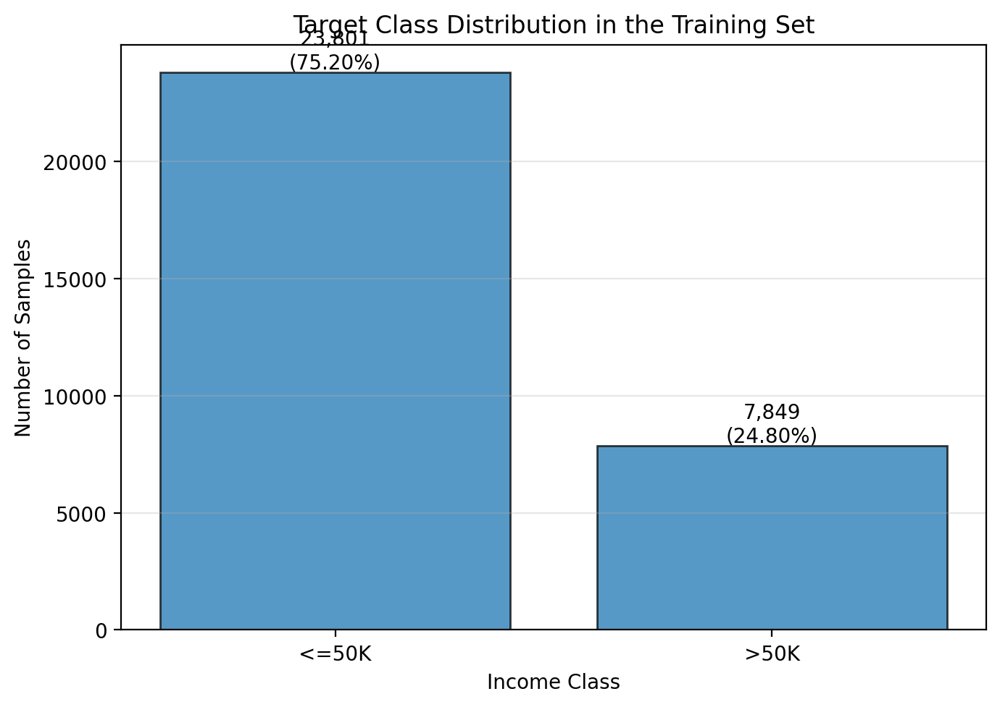
Trong tập train ban đầu, lớp ≤50K chiếm khoảng 75,2% (23.801 mẫu), còn lớp >50K chiếm 24,8% (7.849 mẫu). Vì vậy dữ liệu có mất cân bằng lớp; khi đọc kết quả, cần chú ý thêm Precision, Recall và F1 của lớp thu nhập >50K thay vì chỉ nhìn Accuracy.
Khám phá dữ liệu (EDA)
EDA được thực hiện trên dữ liệu trước tiền xử lý để kiểm tra giá trị thiếu, bản ghi trùng, giá trị số ngoài phạm vi hợp lý và phân phối của từng nhóm đặc trưng.
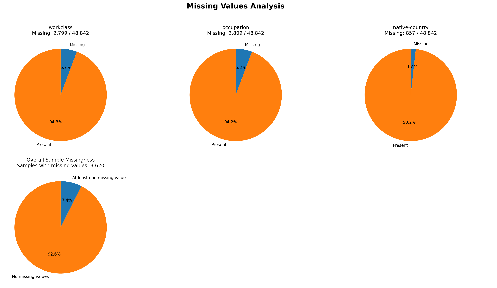
Biểu đồ thể hiện tỷ lệ thiếu ở từng cột và tỷ lệ bản ghi có ít nhất một giá trị thiếu. Sau khi chia train/validation/test, notebook loại các hàng thiếu riêng trong từng split: 2.539 hàng ở train, 513 ở validation và 568 ở test. Việc loại hàng làm giảm dữ liệu nhưng giúp các mô hình nhận đầu vào không còn missing values.
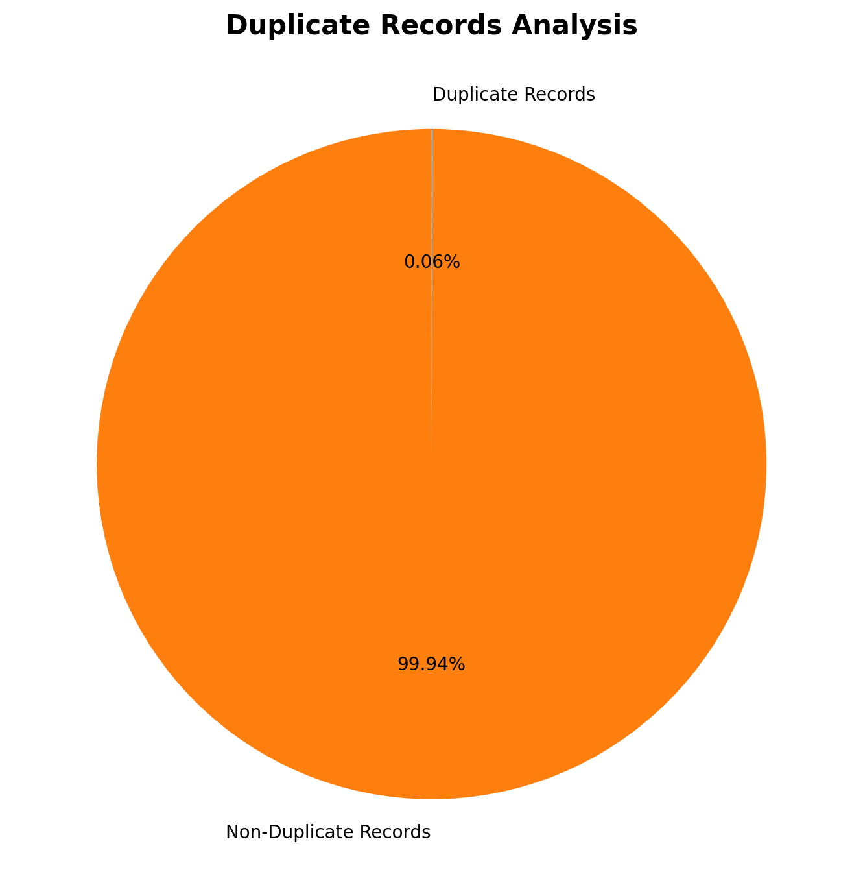
Notebook ghi nhận 29 bản ghi trùng trong tổng số 48.842 mẫu, tương đương khoảng 0,06%. Đây là kết quả kiểm tra các hàng trùng hoàn toàn theo các cột trong bảng dữ liệu; nó không tự động chứng minh rằng các bản ghi khác nhau là những cá nhân khác nhau.
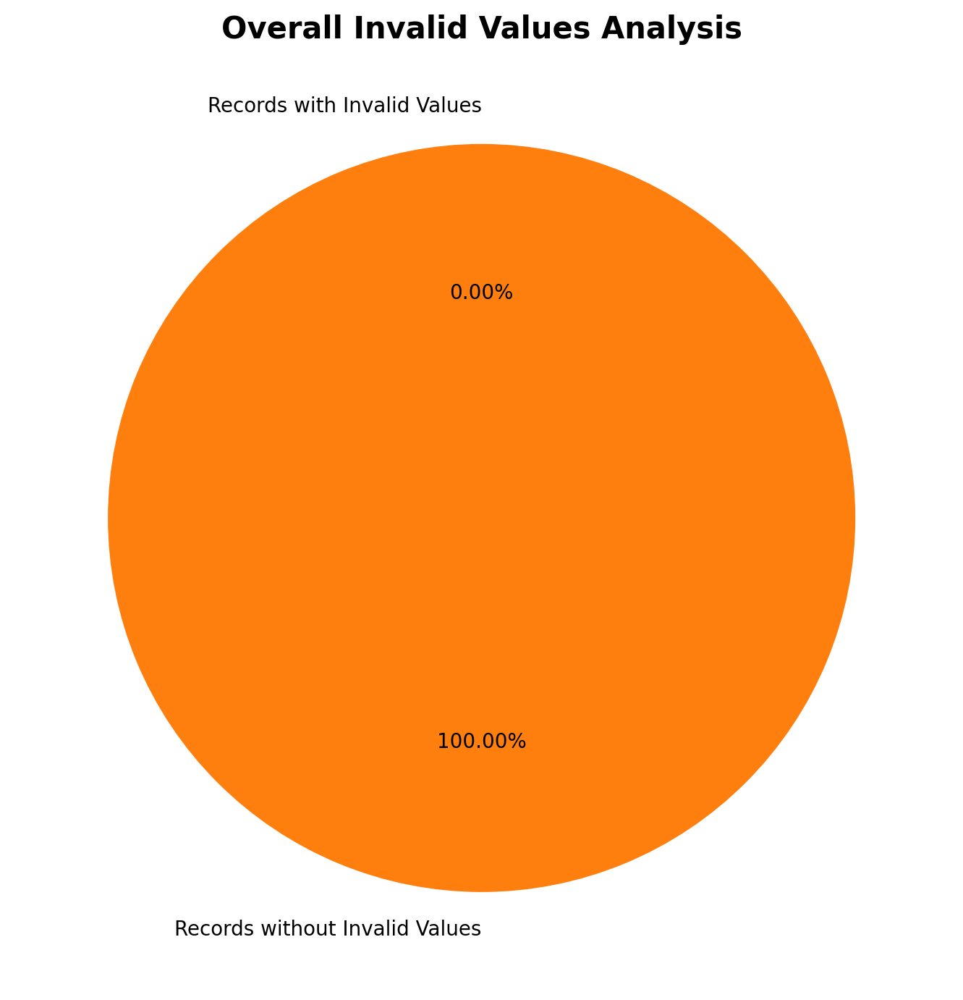
Theo các điều kiện kiểm tra được định nghĩa trong notebook, không có giá trị số nào bị gắn cờ là không hợp lệ: 48.842 bản ghi được giữ ở bước audit này. Kết luận chỉ áp dụng cho những quy tắc kiểm tra đã viết trong notebook, không có nghĩa dữ liệu chắc chắn không chứa mọi dạng bất thường.
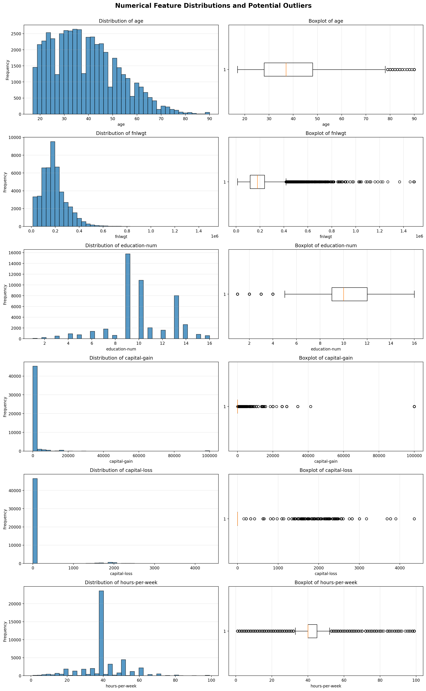
Biểu đồ ghép histogram và boxplot cho sáu biến số.
capital-gain và capital-loss có
nhiều giá trị bằng 0 cùng một số giá trị lớn;
fnlwgt cũng có đuôi phân phối kéo dài. Boxplot
giúp nhận diện các điểm cần xem xét, nhưng điểm nằm ngoài
whisker không mặc nhiên là dữ liệu sai và notebook không tự
động loại outlier.
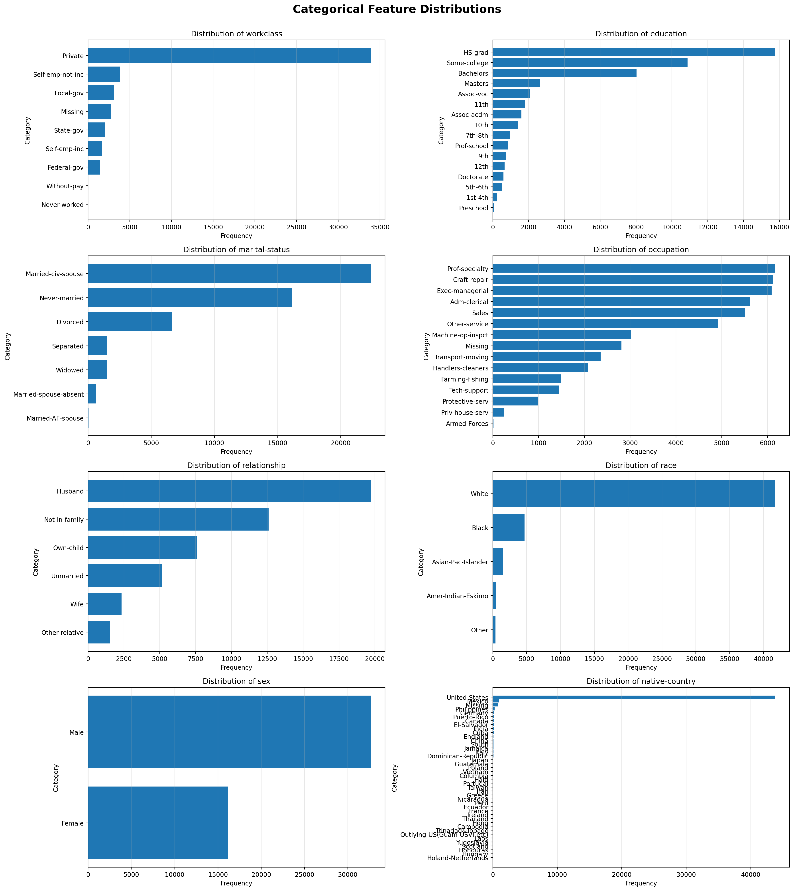
Các biểu đồ cho thấy tần suất của tám biến phân loại như workclass, education, occupation, marital-status và native-country. Các mức phổ biến không đồng đều; một số cột có nhóm missing được biểu diễn riêng. Những phân phối này giải thích vì sao notebook dùng One-Hot Encoding thay vì xem các nhãn danh mục như các con số có thứ tự.
Chuẩn bị dữ liệu
Notebook chia dữ liệu theo tỷ lệ 70% train, 15% validation và 15%
test với random_state=42 và stratify theo nhãn. Sau
khi chia, các hàng có ít nhất một giá trị thiếu được loại riêng
trong mỗi split.
| Split | Trước xử lý | Loại bỏ | Còn lại |
|---|---|---|---|
| Train | 34.189 | 2.539 (7,43%) | 31.650 |
| Validation | 7.326 | 513 (7,00%) | 6.813 |
| Test | 7.327 | 568 (7,75%) | 6.759 |
Notebook dùng One-Hot Encoding cho 8 biến phân loại, fit encoder
trên train rồi áp dụng cho validation/test. Sau encoding, mỗi
split có 104 đặc trưng. Với MLP, sáu đặc trưng số được chuẩn hóa
bằng StandardScaler fit trên train; các cột one-hot
giữ nguyên. XGBoost dùng đặc trưng đã encode mà không cần scaling.
Lưu ý về quy trình: notebook chia dữ liệu trước khi loại hàng missing. Do đó các mẫu bị loại khỏi từng split không được chuyển sang split khác. Test cũng bị loại hàng missing trước khi đánh giá, nên metric cuối phản ánh 6.759 mẫu test còn lại, không phải toàn bộ 7.327 mẫu ban đầu.
Phân tích và mô hình hóa
Notebook so sánh hai baseline: XGBoost với 300 cây, learning rate 0,05, max depth 6; và MLP gồm hai hidden layers 256/128, ReLU và Dropout 0,2. MLP dùng Adam, learning rate 0,001, weight decay 0,0001, tối đa 50 epoch và early stopping theo validation loss với patience 5.
Kết quả trên tập validation
| Model | Accuracy | Precision (>50K) | Recall (>50K) | F1-score (>50K) | ROC-AUC |
|---|---|---|---|---|---|
| XGBoost | 0,8738 | 0,7938 | 0,6631 | 0,7226 | 0,9302 |
| MLP | 0,8573 | 0,7654 | 0,6122 | 0,6803 | 0,9137 |
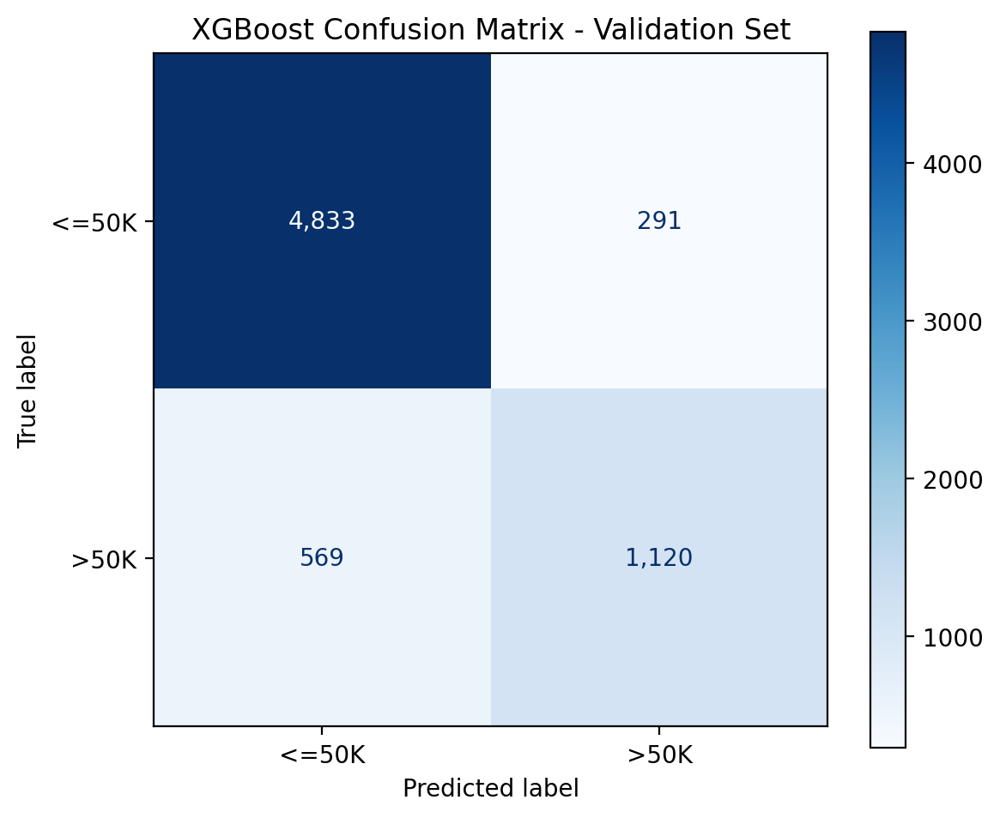
50K." />XGBoost đạt accuracy 87,38% và F1-score 0,7226 cho lớp >50K. Recall 0,6631 cho thấy mô hình nhận diện được khoảng hai phần ba mẫu thuộc lớp thu nhập cao; vẫn còn mẫu dương tính bị dự đoán thành ≤50K.
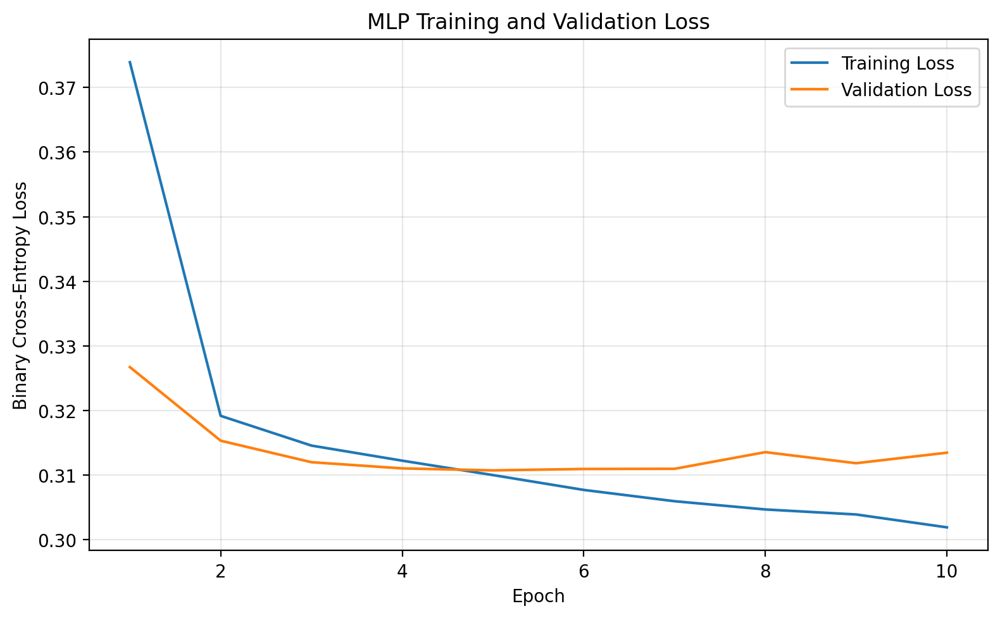
Validation loss tốt nhất được ghi nhận là 0,3107 ở epoch 5; early stopping dừng quá trình ở epoch 10 khi validation loss không cải thiện đủ lâu. Khoảng cách giữa training loss và validation loss về cuối cho thấy cần theo dõi khả năng khái quát hóa, nhưng riêng đường loss chưa đủ để kết luận chắc chắn mức độ overfitting.
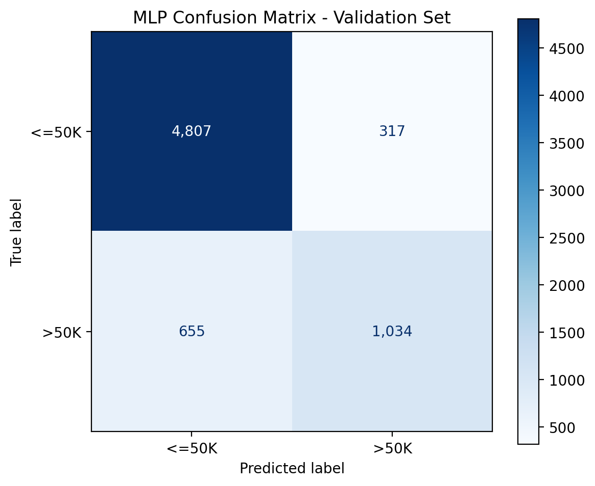
MLP đạt accuracy 85,73%, thấp hơn XGBoost trong lần chạy này. F1-score lớp >50K là 0,6803 và recall là 0,6122, cho thấy MLP bỏ sót nhiều mẫu thu nhập cao hơn XGBoost ở ngưỡng phân loại mặc định.
Kết quả đánh giá cuối trên test
Test được dùng để so sánh cuối cùng sau khi đã huấn luyện các mô
hình. Kết quả dưới đây lấy từ file
baseline_test_comparison.csv đã được notebook xuất.
| Model | Accuracy | Precision (>50K) | Recall (>50K) | F1-score (>50K) | ROC-AUC |
|---|---|---|---|---|---|
| XGBoost | 87,45% | 0,7915 | 0,6683 | 0,7247 | 0,9282 |
| MLP | 85,23% | 0,7467 | 0,6090 | 0,6708 | 0,9097 |
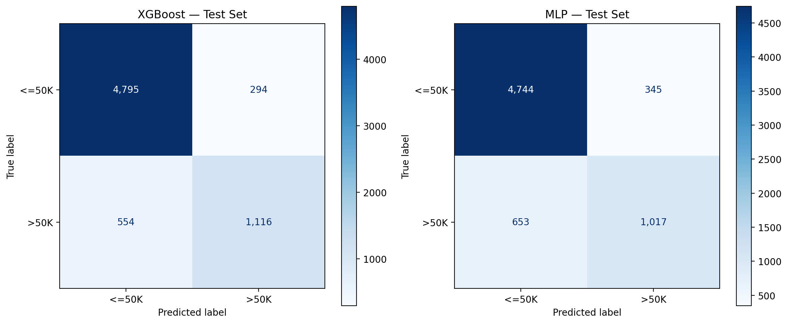
Hai mô hình được đánh giá trên cùng 6.759 mẫu test còn lại sau khi loại missing rows. So sánh ma trận nhầm lẫn giúp xem không chỉ tổng số dự đoán đúng mà còn các trường hợp lớp >50K bị bỏ sót hoặc dự đoán nhầm.
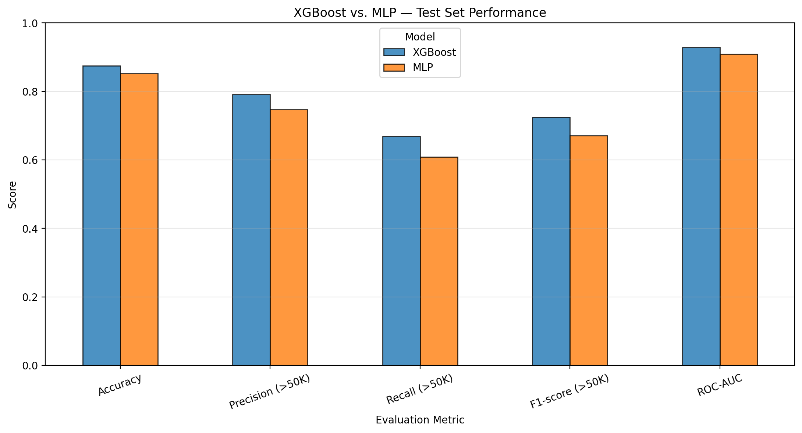
50K và ROC-AUC giữa XGBoost và MLP." />XGBoost có kết quả cao hơn MLP ở cả năm metric được vẽ. Khác biệt đáng chú ý nằm ở Recall lớp >50K (0,6683 so với 0,6090) và F1-score lớp >50K (0,7247 so với 0,6708). Đây là kết quả của lần chạy hiện tại, không phải khẳng định XGBoost luôn vượt trội trong mọi cấu hình.
Tổng kết
Trong lần chạy được lưu trong notebook, XGBoost đạt test accuracy 87,45%, F1-score 0,7247 cho lớp >50K và ROC-AUC 0,9282; các chỉ số tương ứng của MLP là 85,23%, 0,6708 và 0,9097. Vì vậy XGBoost là baseline tốt hơn trong so sánh này.
Hai điểm cần lưu ý khi diễn giải: dữ liệu có mất cân bằng lớp, và các hàng có missing values được loại bỏ sau bước chia tập. Hướng cải tiến hợp lý là kiểm tra thêm precision-recall trade-off cho lớp >50K, thử class weighting hoặc threshold tuning trên validation, và báo cáo kết quả test chỉ sau khi lựa chọn mô hình đã cố định. Đây là đề xuất mở rộng, chưa phải thí nghiệm đã chạy trong notebook.